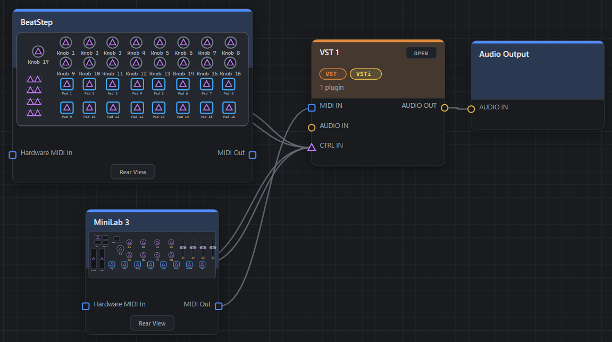
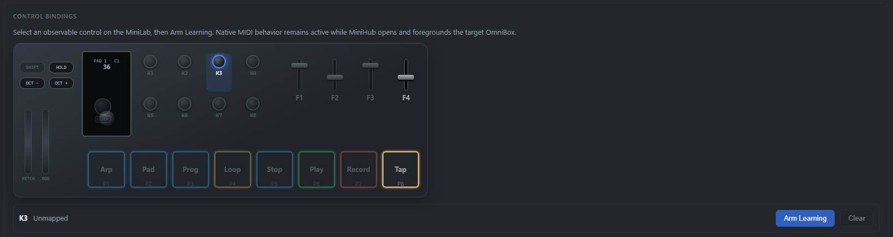

Routing
Patch Bay
Typed ports that refuse the wrong connection, cycle detection across the whole node network, and wiring that outlives every panel you open and close.
Desktop music workstation · Windows
MiniHub is a musical sandbox built around the Arturia MiniLab 3. Typed cables in a Patch Bay — not the page you happen to be looking at — decide the signal path.
No release yet · builds from source
The Patch Bay
Three kinds of port, three kinds of cable. A MIDI output reaches a MIDI input and nothing else. Everything you wire is one node network, and that network is what plays — not the window you happen to have open.

Patch Bay · MiniLab 3 → VST 1 → Audio Output
What it does
Routing
Typed ports that refuse the wrong connection, cycle detection across the whole node network, and wiring that outlives every panel you open and close.
Native engine
Serial plugin chains with native editors, plugin state saved inside the project. C++17 and JUCE on WASAPI, sample-accurate.
Arrangement
MIDI and audio tracks on one timeline, recording, a clip editor, and multi-format export that renders what you heard.
Processing
Nodes you wire like anything else. The arpeggiator carries its own instrument face — knobs and a step grid, not a form.
Hardware
Bind a physical knob or pad to a VST3 parameter. Native MIDI keeps working while the binding is made.
Live
Adding, moving and unplugging nodes never stops the audio. Generative sets are meant to be changed mid-flight, not reloaded.
Control learning
Pick a control on the MiniLab, arm learning, then touch the parameter you want it to drive. The controller is drawn as it really is — eight knobs, four faders, eight pads, two touch strips.

Control bindings · the MiniLab 3 surface, drawn from the device profile
The approach
These are not gaps waiting to be filled. Each one is a decision, written down with its reason, and each one is what keeps the rest small enough to reason about.
src/
is exactly what runs.node:test, not a runner.%APPDATA% are
commitments, not debt. A portability layer added just in case is
refused on sight.Status
There is no release and no installer yet. MiniHub builds and runs from source on Windows 10 and 11, with Visual Studio 2022, CMake 3.22 and Node 20 or newer. The native SDKs are fetched separately and never committed.